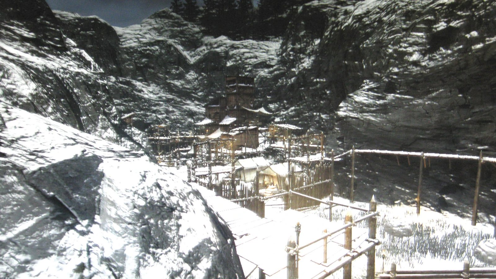
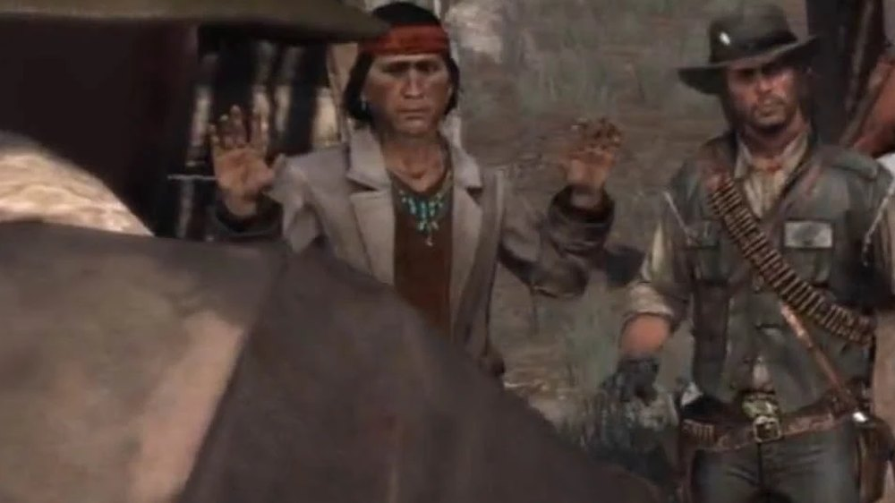
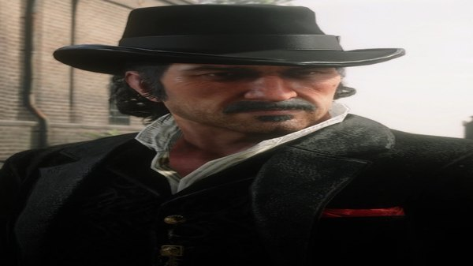
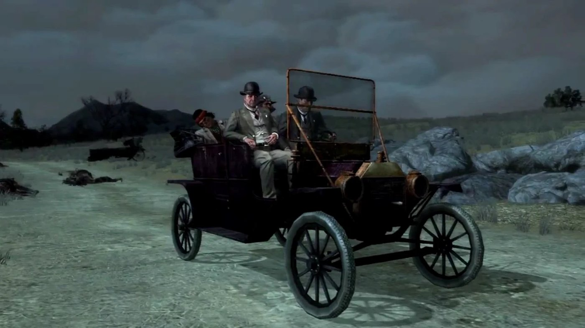

Character · West Elizabeth
Nastas
Nastas is a Native American guide in Red Dead Redemption, and one of the two men Edgar Ross assigns to help John Marston locate Dutch van der Linde in West Elizabeth.
He knows Tall Trees and the men Dutch has recruited there, which makes him the only practical way into the forest.
- Role
- Guide and informant
- Region
- West Elizabeth, Tall Trees
- Works with
- Professor Harold MacDougal
- Status
- Killed in 1911
- Games
- Red Dead Redemption
Biography
Working for MacDougal
Nastas works as guide and informant for Professor Harold MacDougal, an anthropologist based in Blackwater. MacDougal treats him as a research subject as much as an employee, and Nastas takes the work anyway. The arrangement is what puts him in John Marston's path.
The hunt through Tall Trees
Dutch has gathered a new gang in Tall Trees, made up largely of displaced Native men, and raids banks and coaches from a hideout at Cochinay. Nastas leads John through the forest, identifies Dutch's people and narrows down the location of the camp.
Death
Nastas is killed during the search, before John reaches Cochinay. His death removes the one person able to move freely between the two sides in Tall Trees, and the hunt continues without him.
Relationships

John Marston
The man he guides through Tall Trees on the hunt for Dutch.

Dutch van der Linde
The outlaw whose new gang holds Cochinay, and whom the search is aimed at.

Edgar Ross
The Bureau agent directing the operation out of Blackwater.
Behind the scenes
Nastas appears in Red Dead Redemption (2010), in the West Elizabeth chapter of the story.
Gallery
